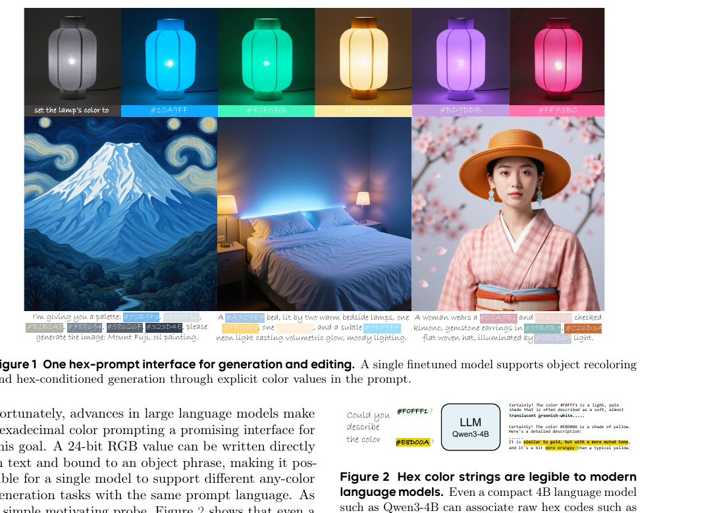
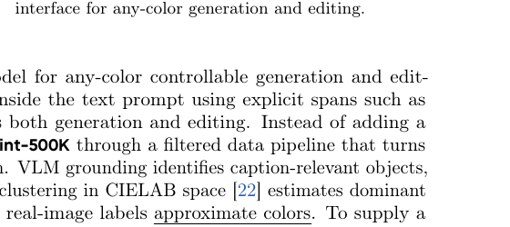
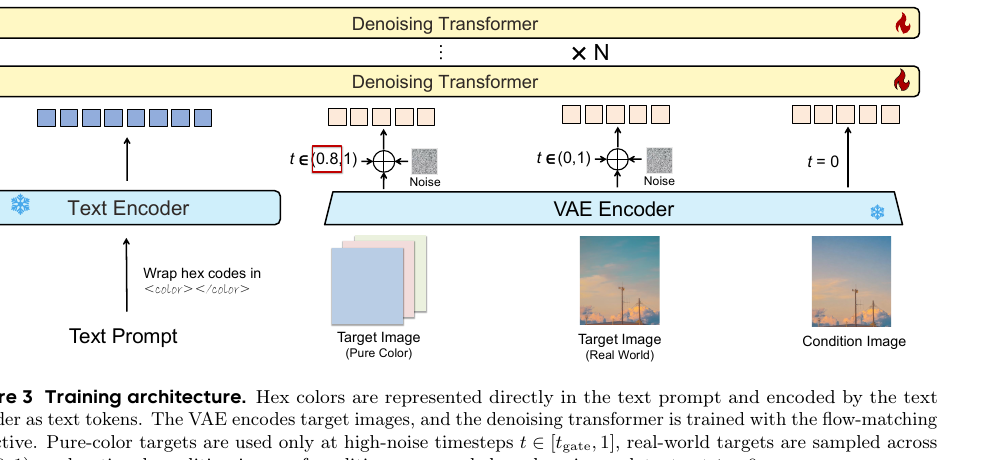
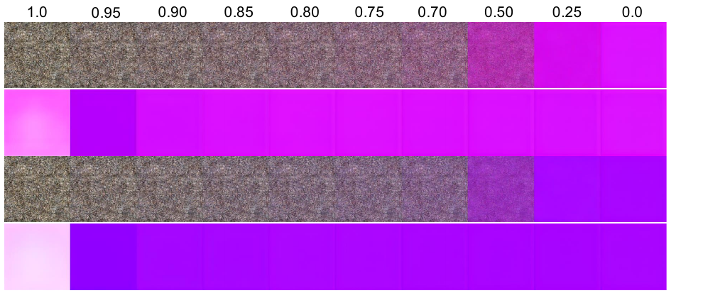
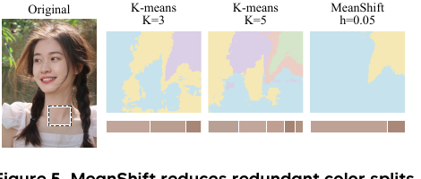
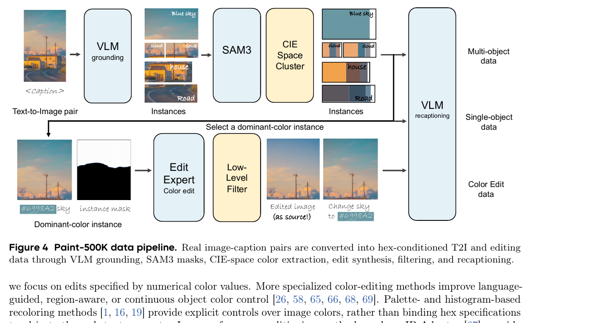

Paint-Anything: Unified Any-Color Control for Image Generation and Editing

#10A9FF/#40F5BB/…）做物体重上色；下排：把一组 hex 调色板写进提示词，直接生成富士山油画、卧室、和服人像。颜色规格完全活在文本里，没有额外的颜色控制分支。
一句话：颜色控制不该是一个"外挂模块"，而是模型本来就该会、只是没被专门喂过的提示词原生能力。Paint-Anything 证明——只要把 hex 写进提示词、再用物体级颜色数据对齐一下，一个 8B 模型就能在颜色保真上打过 56B 的同门大模型。
目标
用任意 24-bit hex（#RRGGBB）指定物体颜色，一个接口同时管生成和编辑，不做专用颜色编码器、不做推理时优化。
数据
Paint-500K：VLM grounding + SAM3 + CIELAB MeanShift 抽物体主色，把真实图转成 hex 监督（40 万 T2I + 10 万编辑）。
方法
纯色锚点提供干净的 hex→RGB 参照，只在高噪声段 t∈[0.8,1] 激活；<color> 标签包裹 + 全量微调。
结果
FLUX.2-4B 上 ACBench-T2I 37.0→68.6（+85.3%），Edit 58.9→75.6（+28.3%），8B 反超 56B FLUX.2-dev。
1. 出发点 (Motivation)
「AI 离一个设计师还有多远？」 论文开篇就把问题摆得很具体：今天的图像模型能想象丰富的场景、渲染惊人的细节，但专业设计要的不只是"一张好看的图"，而是跟一个精确的颜色规格走。品牌 logo 要那个牌子标志性的蓝，电商新品图要那款指定的红——这些需求都不是"蓝色""红色"这种词能表达的，它们需要显式的 hex 值。用户应该能像画家挑颜料一样直接挑物体的颜色。作者把这个能力叫 any-color control（任意颜色控制）：通过 24-bit hex 值指定目标颜色。
以往做颜色控制的路子大致两类，作者认为都有硬伤：
- 加模块 / 学颜色表示——可学习的颜色 prompt（ColorPeel）、CIELAB 对齐的文本 embedding、专门的数值颜色编码器（NumColor）。问题：难以在颜色空间上 scale、难迁移到新架构。
- 推理时优化 / 训练无关技巧——采样引导、attention/value 操纵、颜色对齐目标（ColorWave 等）。问题：推理贵、常带任务特定假设。
结果就是：任意颜色生成、着色 (colorization)、颜色编辑被当成三个分开的问题，而不是同一个"跟着提示词走"的原生能力。
作者的关键观察（也是全文的支点）：现代 LLM 本来就能把 hex 字符串读成颜色语义。Figure 2 是一个"动机探针"——连一个紧凑的 Qwen3-4B 都能把 #F0FFF1 解释成"淡淡的、近乎半透明的绿白色"、把 #E8D00A 解释成"接近金色但更暗、偏橘的黄"。既然文本编码器里已经藏着 hex↔颜色的语义，那颜色规格就该活在文本里，而不是外挂一个新分支。

#F0FFF1 / #E8D00A）关联到合理的颜色语义。这说明 hex 字符串可以充当"生成 + 编辑"统一的文本颜色接口——问题不在"模型不认识 hex"，而在"像素输出没跟数值对齐"。
any-color control
用任意 24-bit hex 值（#RRGGBB，约 1677 万色）精确指定物体颜色的能力，区别于"红/蓝"这类命名色。
hex 提示词接口
把颜色规格直接写进文本提示，用 <color>#AABBCC</color> 标签标出，生成与编辑共用同一套语法。
pure-color anchor（纯色锚点）
一批"纯色块图 + 对应 hex 提示"的辅助样本，像素严格等于目标 hex，给模型一个干净的 hex→RGB 数值参照。
timestep gate（时间步门控）
只在高噪声段 t∈[t_gate,1] 用纯色锚点训练；因为纯色轨迹里颜色早在 t≈0.8 就定形，低噪声段留给真实图。
CIELAB / MeanShift
CIELAB 是感知均匀的颜色空间（欧氏距离≈人眼色差）；MeanShift 是不用预设簇数 K 的聚类，用来自适应地抽物体主色。
rectified flow / flow-matching
本文底座的扩散范式：在干净 latent z₀ 与噪声 ε 之间走直线 z_t=(1−t)z₀+tε，模型学预测速度 v⋆=ε−z₀。
SAM3 / VLM grounding
数据管线里的两把工具：VLM 把 caption 里的物体定位成 bbox，SAM3 把 bbox 分割成精确物体掩码，供颜色抽取用。
ACBench
本文自建的物体级颜色保真基准，分 ACBench-T2I（生成，1000 条）和 ACBench-Edit（编辑，500 条），打分 0–100。
2. 方法 (Method)
2.1 底座与训练目标：生成和编辑其实是同一个损失
Paint-Anything 建在一个 rectified-flow 文生图模型上（文本编码器 + VAE + 去噪 transformer，对应 FLUX.2 谱系）。记文本提示 \(y\)、目标图 \(I^\star\)；编辑时还有源图 \(I^c\)。冻结的文本编码器把 \(y\) 映成 \(c\)；VAE 把目标图编成 latent \(z_0=E_\text{vae}(I^\star)\)，编辑时源图编成干净的条件 latent \(z^c=E_\text{vae}(I^c)\)。
flow-matching 的前向过程和速度目标：
—— 翻译：在"干净图 z₀"（t=0）和"纯噪声 ε"（t=1）之间拉一条直线，t 是位置。模型要学的"速度" v⋆ 就是这条直线的方向 ε−z₀——沿它反着走就能从噪声回到干净图。
去噪器从"带噪目标 latent + 时间步 + 文本 token + 可选图像条件 token"预测速度：
—— 翻译：[z_t; z^c] 是"把源图 latent 拼在带噪目标 latent 后面"。生成任务里没有源图，这一项就退化成只有 z_t。所以——生成和编辑用的是同一个去噪目标，唯一区别是要不要把干净的条件图 latent 拼进去。这是"一套接口管两件事"在数学上的落点。

2.2 三个动作：标签包裹、统一格式、纯色锚点
① 显式 color 标签包裹。 把每个 24-bit sRGB hex 用 <color> 和 </color> 括起来，直接写进提示里，例如"a photo of a <color> #CFEFFB </color> colored car"或"change the bag to <color> #FFF8C4 </color>"。为什么要这么做？因为文本编码器在微调期间是冻结的——它不会学新东西，那就得在喂给它之前把"这串字符是颜色属性"这件事讲清楚。消融显示（Table 2）这个包裹能显著抬 ACBench 和 CompColor。
② 统一生成/编辑格式。 生成和编辑联合训练，让一个模型通过同一套 hex 接口同时学"颜色感知、物体-颜色绑定、颜色条件编辑"。每个样本都有目标图 + hex 提示；编辑样本额外带一张源图，作为干净的条件 latent 分支。
③ 纯色锚点监督（本文最精巧的一招）。 真实图给了物体语义，但测出来的颜色是有噪声的——阴影会把同一个"单色"物体映射到一大堆 RGB 值，标签只是近似色。于是作者补一路纯色锚点：采样 24-bit RGB 值，渲染成一张纯色块图，配上带 <color>#HEX</color> 的提示。纯色块的像素严格等于目标 hex，给模型一个干净的 hex→RGB 数值映射，把训练焦点放在"颜色 token 对齐"而不是"物体语义"上。
但纯色锚点不能全程用——这是关键洞察。作者观察纯色生成轨迹（Fig. 9）发现：颜色在 t≈0.8 就已经视觉稳定了，后面低噪声段基本是在补细节。所以他们上了一个高噪声门控：纯色样本只用 \(t\sim\mathcal U(t_\text{gate},1.0)\) 训练（\(t_\text{gate}=0.8\)），把低噪声段留给真实图的 T2I 和编辑。直觉上——纯色块在低噪声段是"没有任何纹理/物体结构可学"的退化样本，硬塞进去只会让模型在细节阶段学到"平涂"的坏习惯，反而伤编辑保真。

总损失把三条流加起来：
—— 翻译：三项都用同一个 flow-matching 损失（Eq. 3），只是喂的数据不同：L_t2i 用真实图颜色生成样本、L_edit 用成对编辑样本、L_rgb 用高噪声门控下的纯色锚点。论文里 λ 全取 1，实际配比靠 batch 内样本数控制（30 T2I : 12 纯色 : 30 编辑）。只微调去噪 transformer，VAE 和文本编码器全冻。
由于没有官方开源代码，下面用等价伪代码还原三条流的采样与门控逻辑（常量取自论文正文与附录 D）：
等价伪代码 — 非原文逐字（据 §3.2 与附录 D 重建）
# 一个 batch = 72 条：30 真实图 T2I + 12 纯色锚点 + 30 编辑
T_GATE = 0.8 # 纯色锚点只在 t∈[0.8,1] 激活
LAM = dict(t2i=1.0, edit=1.0, rgb=1.0)
def build_batch(t2i_pool, pure_pool, edit_pool):
return (sample(t2i_pool, 30), sample(pure_pool, 12), sample(edit_pool, 30))
def wrap_hex(prompt, hex_list):
# ① 显式 color 标签包裹：冻结文编码器读不懂裸 hex，先把"这是颜色"讲明白
for h in hex_list:
prompt = prompt.replace(h, f"<color> {h} </color>")
return prompt
def flow_loss(z0, cond_latent, text_emb, t):
eps = randn_like(z0)
zt = (1 - t) * z0 + t * eps # Eq.1 直线插值
v_star = eps - z0 # 目标速度
zin = cat([zt, cond_latent]) if cond_latent is not None else zt # 编辑才拼源图
v_hat = denoiser(zin, t, text_emb) # 只有 denoiser 可训练
return mse(v_hat, v_star) # Eq.3
def step(batch):
t2i, pure, edit = batch
L = 0.0
for s in t2i: # 真实图：全段采样
t = uniform(0.0, 1.0)
L += LAM['t2i'] * flow_loss(s.z0, None, encode(wrap_hex(s.prompt, s.hex)), t)
for s in pure: # 纯色锚点：③ 高噪声门控 —— 只在 [T_GATE, 1] 采样
t = uniform(T_GATE, 1.0)
L += LAM['rgb'] * flow_loss(s.z0, None, encode(wrap_hex(s.prompt, s.hex)), t)
for s in edit: # 编辑：全段采样，且拼干净源图 latent
t = uniform(0.0, 1.0)
L += LAM['edit'] * flow_loss(s.z0, s.cond_latent, encode(wrap_hex(s.instr, s.hex)), t)
return L / 72
三个动作的对应关系一目了然：wrap_hex 是①，edit 分支拼 cond_latent 是②，pure 分支的 uniform(T_GATE, 1.0) 是③。整套微调只有 denoiser 的参数在动。
2.3 数据管线：把真实图"榨"成物体级 hex 监督
Paint-500K 的核心是从真实图里可靠地抽出物体主色。作者指出朴素做法（RGB 空间 k-means）的两个毛病：(I) RGB 距离不反映人眼感知，会把相近色拆开、把不同色并掉；(II) 物体的主色数目不定，固定 K 会把阴影/噪声拆成多余的簇。
对策两点：换空间（用感知均匀的 CIELAB）+ 换聚类（用不用预设 K 的 MeanShift 自适应簇数）。Fig. 5 是直观对比——k-means（K=3/5）把一块皮肤拆成好几个冗余簇，MeanShift（bandwidth=0.05）给出更连贯的单一主色区。


数据管线的过滤逻辑同样用伪代码还原（常量取自附录 D）：
等价伪代码 — 非原文逐字（据 §3.3 与附录 D：bandwidth=0.05, COLOR_MIN_RATIO=0.15, INSTANCE_KEEP_RATIO=0.90）
COLOR_MIN_RATIO = 0.15 # 单个保留簇至少覆盖物体像素的 15%
INSTANCE_KEEP_RATIO = 0.90 # 保留簇合计至少覆盖 90%，否则丢弃该实例
def extract_object_color(image, mask):
lab = rgb_to_cielab(image[mask]) # 只取物体像素，进感知空间
lab = normalize(lab, to=[0, 1]) # CIELAB 通道归一化到 [0,1]
clusters = mean_shift(lab, bandwidth=0.05) # 自适应簇数，不预设 K
total = len(lab)
kept = [c for c in clusters if c.size / total >= COLOR_MIN_RATIO] # 滤掉高光/阴影/装饰小块
if sum(c.size for c in kept) / total < INSTANCE_KEEP_RATIO:
return None # 覆盖不够 → 这个实例整体丢弃
dominant = max(kept, key=lambda c: c.size) # 像素质量最大的簇 = 主色
return cielab_to_hex(dominant.mean) # 转成 24-bit sRGB hex 标签
# 上游：Seed1.8(VLM) 定位物体 bbox → SAM3 分割 → 上面抽主色 → VLM 把 <color>#HEX</color> 写回 caption
# 编辑数据反向合成：Qwen-Image-Edit-2511 + 4步 Lightning LoRA 把单物体图改色成"源图"，原图当"目标图"
两条流的产量：T2I 40 万（10 万单物体 + 30 万多物体，多物体教"组合式颜色绑定"，单物体教"直接颜色感知"）+ 编辑 10 万。作者随机抽检 100 条，96 条的主色标签与人眼一致。
2.4 设计决策表（谁贡献了多少）
下表把 Table 2 的模块消融拉成决策视图（FLUX.2-4B，指标为 ACBench-T2I / ACBench-Edit / CompColor-hex）：
| 组件 | 起点 | 消融方向 | 最终选择 | 为什么 |
|---|---|---|---|---|
| 微调方式 | 冻结底座 37.0 / 58.9 / 0.38 | 裸 hex 全量微调 → 44.1 / 65.8 / 0.52 | 全量微调 | 光是"喂颜色数据全量微调"就抬一大截；但只到这还远不够。 |
| color 标签包裹 | 裸 hex | 加 <color> 包裹（无锚点）→ 57.2 / 73.9 / 0.71 |
加包裹 | 冻结文编码器读不懂裸 hex，包裹给它一个明确的"这是颜色"文本把手；单这一项 T2I +13。 |
| 纯色锚点 | 有包裹无锚点 | 加锚点但不门控 → 63.8 / 70.4 / 0.71 | 加锚点 + 门控 | 无门控锚点：生成↑（57→64）但编辑↓（74→70）——纯色块塞进低噪声段伤了编辑细节保真。 |
| 高噪声门控 | 无门控锚点 63.8 / 70.4 | 门控 t_gate=0.8 → 68.6 / 75.6 / 0.79 | t_gate=0.8 | 把锚点关在高噪声段，生成 +4.75、编辑 +5.18，两个都涨。对齐"颜色 t≈0.8 就定形"的观察。 |
| full-FT vs LoRA | 完整配方全量微调 68.6 | rank-256 LoRA → 48.5 / 58.7 / 0.54 | 全量微调 | 同样 4000 步、同学习率下，LoRA 差一大截——像素级颜色对齐需要动到主干，不是低秩补丁能覆盖的。 |
t_gate 单独扫（Table 3，配方其余不变）：0.0 / 0.7 / 0.8 / 0.9 / 1.0 对应 T2I 63.8 / 65.9 / 68.6 / 67.5 / 67.6，Edit 70.4 / 72.7 / 75.6 / 73.7 / 71.5。0.7~0.9 都比不门控好，敏感度低，取 0.8。
3. 关键结果 (Results)
主表（Table 1，ACBench 0–100，CompColor 0–1）。 在 FLUX.2-4B 上：
- ACBench-T2I：Single 37.45→72.67，Two 36.60→64.49，Overall 37.02→68.58（相对 +85.3%）。
- ACBench-Edit：58.90→75.57（相对 +28.3%）。
- CompColor（hex 提示）：base 平均 0.38 → 0.79（翻倍还多）；命名色平均也从 0.72→0.79，说明微调没有牺牲原有的命名色组合绑定能力，反而增强了。
8B 反超 56B——本文最有冲击力的一条。 FLUX.2 家族里，off-the-shelf 模型随参数增长（8B→17B→56B）颜色分数确实在涨；但微调后的 8B 模型在 ACBench-T2I 上比 56B 的 FLUX.2-dev 高 16.88 分（68.58 vs 51.70），编辑高 6.70 分（75.57 vs 68.87）。换句话说，正确的颜色监督数据，比堆 7 倍参数更管用。
打过专用颜色系统。 ACBench-T2I 比最强专用基线 ColorWave 高 22.04 分；ACBench-Edit 比 ColorBind/Edit 高 15.19 分。同一套配方换到 Z-Image Base 上，ACBench-T2I 也从 33.45→53.77，说明配方可迁移，不是对 FLUX 过拟合。
打分函数（Eq. 5）值得一提，它决定了这些数字怎么来：
—— 翻译：先用 SAM3 抠出目标物体掩码，算掩码内像素的平均 RGB c̄，跟目标 c⋆ 比每通道平均绝对误差 MAE（0–255 尺度）。MAE≤16 满分 100，MAE≥64 得 0 分，中间线性给分——留出"渐变信用"，不把差一点的结果一刀切到零。定位失败直接记 0。
独立基准 + 人评佐证：GenColorBench NCU 评测也把 Paint-Anything 排在被比方法里最高；人类偏好研究更偏好它的颜色结果而非底座（附录 A、K）。
4. 实现细节 (Implementation)
无官方开源代码（Seed 技术报告，源图库也不公开），以下细节取自正文与附录 D，供复现参考：
- 底座：微调 FLUX.2-klein-base-4B 和 Z-Image Base，同一套配方。"4B/9B"指 DiT 参数量；Table 1 的 Total params 含捆绑的 Qwen3 文本编码器（所以 4B 记为 8B total）。用的是未蒸馏的 klein base checkpoint。
- 优化：Adam，学习率 \(2\times10^{-5}\)，全局 batch size 72，训 4000 步，4 卡。只微调去噪 transformer，VAE + 文本编码器全冻。
- batch 配比：每个 batch = 30 真实图 T2I + 12 纯色锚点 + 30 编辑（λ 全取 1，配比靠样本数控制）。
- 纯色锚点流：1 万张纯色块，512×512 分辨率，只在 \(t\in[0.8,1.0]\) 采样。
- 数据管线工具链：VLM = Seed1.8（负责 grounding / 过滤 / recaptioning）；分割 = SAM3；编辑专家 = Qwen-Image-Edit-2511 + 4 步 Qwen-Image-Edit-2511-Lightning LoRA。
- 颜色抽取常量：CIELAB 通道归一化到 [0,1]，MeanShift bandwidth = 0.05；
COLOR_MIN_RATIO=0.15（单簇最小覆盖），INSTANCE_KEEP_RATIO=0.90（保留簇合计覆盖）。 - 推理 CFG：FLUX.2-4B 的 T2I 默认 CFG=4.0；所有编辑对比（含底座与微调变体）统一 CFG=2.0。
- 评测协议：T2I 分割"生成图里的被提示物体"；编辑分割"源图里的目标物体"并人工核掩码，同一源掩码在所有被比编辑输出上复用（保证公平）。
论文 ↔ 复现的对齐/存疑点（无代码，只能标注）：
- ✅ 三条流的时间步采样区间（真实图全段、纯色高噪声段、条件图 t=0）在 Fig. 3 和正文一致，伪代码可直接落地。
- ⚠️ 纯色锚点在 latent 空间的表示：附录 I（"Pure-Color Anchor Resolution"）提到分辨率问题——纯色块过 VAE 后 latent 未必严格常数，论文用 512×512 但未给 latent 端的精确处理，复现时需注意 VAE 对纯色的重建误差。
- ⚠️ MeanShift bandwidth=0.05 是在归一化 CIELAB 上，换未归一化或不同 LAB 尺度会得到完全不同的簇数，这个常量强依赖预处理。
- ⚠️ 编辑数据用 Qwen-Image-Edit 反向合成，源图带生成瑕疵、目标图是真实照片——这条"只让源图是生成的"设计很聪明（避免目标端学到生成 artifact），但也意味着模型见到的"源→目标"分布与真实用户编辑（源是真实照片）方向相反，可能有分布偏移。
5. 评价与延伸 (Critique & Related)
亮点
- 问题定义干净：把散落的"颜色生成 / 着色 / 颜色编辑"收敛成一个"提示词原生的任意颜色控制"，并给出可量化的 ACBench，让"颜色保真"从主观变成可比数字。
- 纯色锚点 + 高噪声门控是全文最有迁移价值的一招：用"退化但绝对干净"的合成样本补真实数据的短板，再用"能力在哪个噪声段涌现"的观察决定它该在哪个时间段起作用。这套"合成锚点 + 时间步定向"的思路可以迁移到任何"真实标签有噪声、但理想信号可合成"的属性控制（材质、光照、纹理密度……）。
- 8B 打过 56B：一个很有说服力的"数据/接口 > 参数堆叠"的证据点。
不足与存疑
- §5 限制自陈很短：只说"没有调色板 (palette) 专项监督"。但更实质的问题作者没展开：多物体、每物体多主色时的绑定可靠性——ACBench 的 Two 分数（64.49）明显低于 Single（72.67），说明组合式颜色绑定仍是弱项，论文没给失败案例分析。
- 依赖强上游工具：整条数据管线吊在 Seed1.8（闭源 VLM）+ SAM3 + Qwen-Image-Edit 上。grounding 错、掩码错、或编辑专家改色不干净，都会污染标签。作者只报了"100 抽检 96 对"，但没有量化上游误差如何传导到最终颜色保真。
- 打分函数偏宽松：MAE≤16（0–255 尺度，即每通道平均差 16/255≈6%）就满分。对"品牌色必须像素级精确"的真实设计诉求，这个阈值可能过松——85.3% 的相对提升有一部分来自"从很差到还行"，而非"从还行到精确"。
- 纯色锚点的 VAE 悖论：纯色块本意是给"绝对干净的 hex→RGB 映射"，但它得先过一个对纯色重建有误差的 VAE，附录 I 暴露了这个张力却没彻底解决——理论上"干净"的锚点在 latent 空间可能并不干净。
- 闭源、不可复现：数据、权重、代码均不公开，ACBench 虽自建但也未见公开发布承诺，第三方难以独立验证。
交叉验证：与相近工作的结论对照
Paint-Anything 的元主张是——新的控制能力应该来自"数据监督 + 提示词接口"，而不是"专用模块 / 推理时优化"。把它放到本库几篇相近工作里对照：
| 工作 | 要获取的新能力 | 手段（架构 vs 数据/接口） | 与本文结论 | 观察 |
|---|---|---|---|---|
| Paint-Anything（本文） | hex 任意颜色控制 | 数据监督 + 冻结文编码器 + 提示原生 hex，只加一个 timestep-gate 小 loss，不加模块 | — | 8B 微调反超 56B；LoRA 明显不如全量微调 |
| qwen-image-2-2026 | 中文长文本渲染 / 统一生成编辑 | 数据 + RLHF + 蒸馏，冻结 Qwen3-VL 当 condition encoder，无专用控制模块 | 同 | 能力主要来自数据配方与接口设计，而非新控制分支 |
| bernini-2026 | 跨模态语义规划下的视频编辑 | 加专用模块：MLLM 语义 planner + SA-3D RoPE，planner/renderer 分工 | 异 | 这里的能力来自一个新的架构接口（语义 embedding），不是纯数据对齐 |
| latent-to-pixel-2026 | latent→像素空间迁移 | AsymFlow 动 loss 不动架构 / L2P 动架构不动 loss | 元层面同一争论 | 同样在问"动数据/loss 还是动架构"，两条路都能成 |
分歧的可能成因：颜色是一个**"语义早就在预训练里、只是数值没对齐"的低维属性**——模型本来就"认识"#FF0000 是红（Fig. 2 已证），缺的只是把输出像素跟这个数值校准，所以数据对齐就够了，不需要新模块。而 Bernini 要的"跨模态语义规划"、latent→pixel 要的"分布外迁移"，是预训练分布里没有现成对应物的新能力，往往就得架构介入。一句话：属性是否已在预训练语义里，决定了你该动数据还是动架构。 Paint-Anything 之所以能用最轻的手段（不加模块）拿最大的收益，正是因为它挑的是一个"底座已经会、只是没校准"的问题。
研究启发（可迁移的套路）
合成锚点补真实噪声
真实标签有噪声（阴影污染颜色）时，造一批"绝对干净但退化"的合成样本（纯色块）当锚点，把某个子能力的监督信号钉死。可迁移到材质/光照/纹理等属性控制。
能力涌现的时间步 → 监督的时间步
先观察"目标属性在扩散轨迹的哪个噪声段定形"（颜色在 t≈0.8），再把该属性的监督**定向**投到那个段。时间步不是均匀的，别浪费监督预算。
把控制塞进冻结编码器能读的文本
文编码器冻结时，与其外挂新分支，不如用它已能解析的 token（hex 字符串）表达控制，再用 <color> 这类显式标签降低歧义。零新增参数的控制接口。
反向合成编辑对
要"源→目标"编辑数据但只有单张真实图？让真实图当目标、生成模型造源——这样目标端零生成瑕疵。反直觉但干净。
延伸阅读
- qwen-image-2-2026 —— 同样"数据/接口 > 堆参数"的路线，看统一生成编辑怎么靠数据配方 + 蒸馏拿 SOTA。
- bernini-2026 —— 对照组：当能力是"分布外的新东西"时，为什么就得加专用模块。
- latent-to-pixel-2026 —— "动数据/loss vs 动架构"这场元争论的另一个案例，两条刀法并排。
讨论 / Comments
评论托管在本仓库的 GitHub Discussions, 需 GitHub 账号。